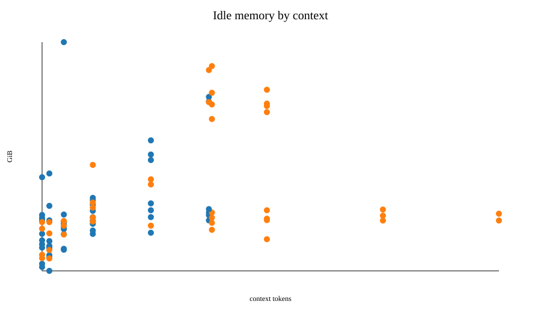
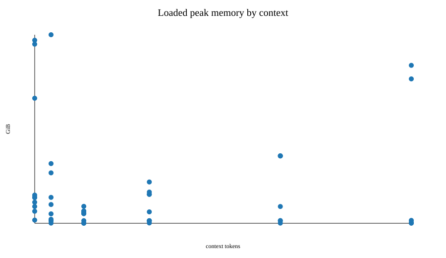
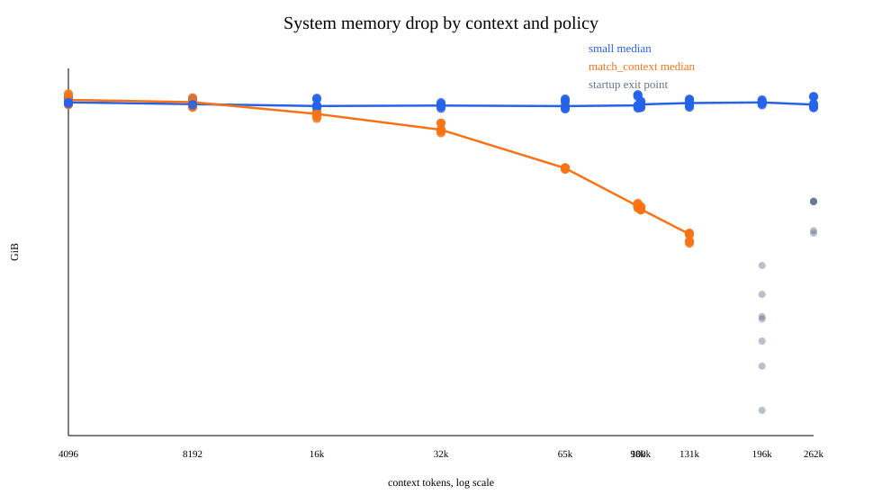
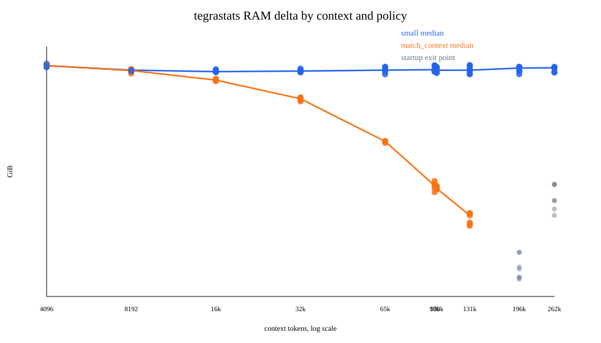
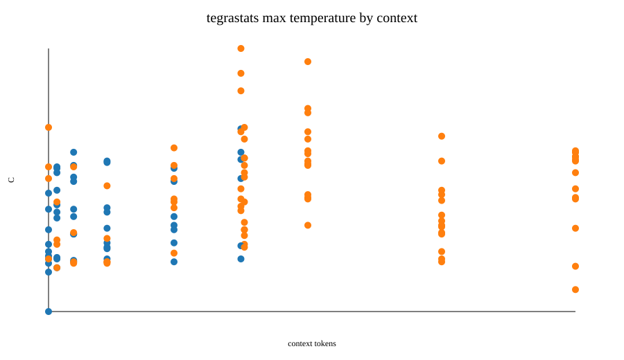
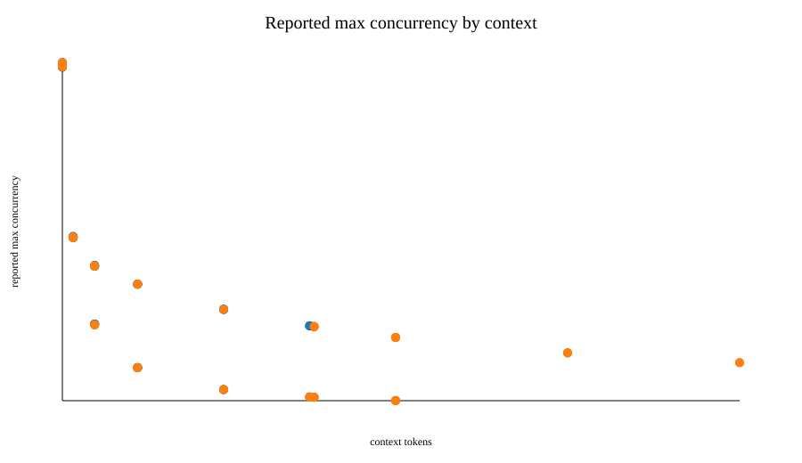
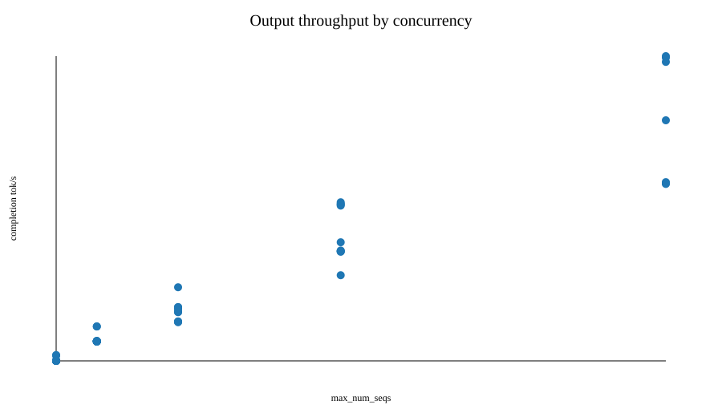
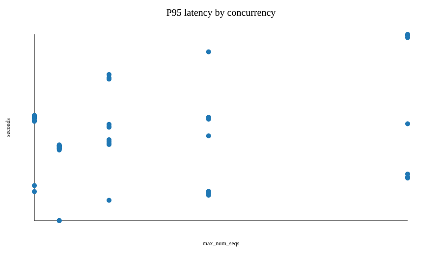

Standalone vLLM sweep for nvidia/Gemma-4-26B-A4B-NVFP4. Generated from results/tegrastats-sweep-20260623T075153Z-results.jsonl.
Rows: 140. Status counts: load_complete=52, startup_only=74, startup_service_exit=14.
361.593 completion tok/s at ctx8192-seq16-small.tegrastats: 82.372 GiB at ctx4096-seq8-small. This is not a per-context KV-cache size.tegrastats RAM delta and system MemAvailable drop), process accounting (cgroup), and vLLM capacity.tegrastats_ram_delta_gib is whole-machine RAM pressure over the run, not context-window memory:
\[\Delta R = R_{max\ used} - R_{baseline\ used}\]
The raw RAM-used reading is roughly total RAM minus free/available RAM at that moment. On this machine the raw maximum is often around 90 GiB used; subtracting the pre-run baseline around 8-9 GiB produces the roughly 81-82 GiB delta.
Read RAM plots by policy and startup status. They should not be read as smaller context requires more KV cache
.
small policy rows are essentially flat: context-level medians range from 81.187 to 82.075 GiB.match_context rows are a separate regime: medians range from 59.582 to 82.113 GiB because large max_num_batched_tokens changes vLLM capacity reservation and some high-context rows exit during startup.tegrastats baseline RAM-used values range from 8.086 to 9.275 GiB; raw max RAM-used values range from 58.374 to 91.045 GiB.| context | small median delta GiB | match_context median delta GiB | small median q | match_context median q | notes |
|---|---|---|---|---|---|
| 4096 | 82.075 | 82.113 | 137.110 | 137.110 | |
| 8192 | 81.420 | 81.350 | 67.470 | 67.430 | |
| 16384 | 81.187 | 79.917 | 55.950 | 32.570 | |
| 32768 | 81.278 | 77.107 | 48.710 | 15.150 | match_context reserves much lower q |
| 65536 | 81.414 | 70.710 | 38.490 | 6.330 | match_context reserves much lower q |
| 98304 | 81.483 | 64.051 | 31.920 | 3.370 | match_context reserves much lower q |
| 100000 | 81.395 | 63.624 | 31.550 | 3.280 | match_context reserves much lower q |
| 131072 | 81.407 | 59.582 | 27.210 | 1.950 | match_context reserves much lower q |
| 196608 | 81.729 | 21.060 | 7 startup exits | ||
| 262144 | 81.770 | 17.170 | 7 startup exits |
| policy | b(c) | q(c) | rec. s |
|---|
The simplified capacity view treats context length as the main input and policy as the main choice. Batch tokens and recommended concurrency are derived from those.
| symbol | meaning | simplified role |
|---|---|---|
| \(c\) | context window / --max-model-len | primary input |
| \(p\) | batch policy | choose small or match_context |
| \(b\) | --max-num-batched-tokens | derived from \(c,p\) |
| \(q\) | vLLM-reported max concurrency | measured capacity curve \(Q_p(c)\) |
| \(s\) | --max-num-seqs | recommended from \(q\) with a safety margin |
Policy definitions:
\[b_{small}(c)=\min(c,8192)\]
\[b_{match\_context}(c)=c\]
Recommended concurrency:
\[s_{recommended}(c,p,m)=\left\lfloor m\,Q_p(c)\right\rfloor\]
The dashboard defaults to \(m=0.8\). For a fixed memory budget, this is the practical frontier: requested sessions should stay below \(\left\lfloor m\,Q_p(c)\right\rfloor\). At 150k context, use the slider and compare the two policy rows instead of reading a global linear interpolation.
This simplification is for capacity planning only. Throughput and latency still need the separate metric surface because they depend on actual requested concurrency and load shape.
| sample | ctx | seq | status | actual | model | residual | q | tok/s |
|---|








The sweep is a system with startup parameters as inputs and resource/performance measurements as outputs. The symbols below are single-letter quantities used by the formulas.
| symbol | quantity |
|---|---|
| \(c\) | context window, measured in 1024-token units |
| \(s\) | requested maximum concurrent sequences |
| \(b\) | maximum batched tokens |
| \(u\) | vLLM GPU memory utilization target |
| \(p\) | batching policy indicator, where \(p=0\) for small and \(p=1\) for match_context |
| \(v\) | requested token budget |
| \(k\) | vLLM-reported KV cache token capacity |
| \(q\) | vLLM-reported maximum concurrency for the configured context |
| \(m\) | idle service memory |
| \(h\) | idle service peak memory |
| \(a\) | loaded service peak memory |
| \(y\) | completion token throughput |
| \(z\) | total token throughput |
| \(l\) | p95 request latency |
| \(w\) | free swap memory |
| \(r\) | risk guard indicator, where \(r=1\) means load is blocked by policy |
| \(o\) | startup outcome |
| \(d\) | load decision, where \(d=1\) means load was run |
Derived budget:
\[v = cs\]
Startup and capacity:
\[o = O(c,s,b,u,p)\]
\[k = K(c,s,b,u,p)\]
\[q = Q(c,s,b,u,p)\]
Load is run only when the configured concurrency is inside reported capacity and safety bounds:
\[d = \mathbb{1}\{q \ge s \;\land\; m < m_{\max} \;\land\; w > w_{\min} \;\land\; r = 0\}\]
Memory model family:
\[m = M(c,s,b,u,p,cs) + \epsilon_m\]
\[h = H(c,s,b,u,p,cs) + \epsilon_h\]
\[a = A(c,s,b,u,p,cs) + \epsilon_a, \quad d=1\]
Performance model family:
\[y = Y(c,s,b,u,p,cs) + \epsilon_y, \quad d=1\]
\[z = Z(c,s,b,u,p,cs) + \epsilon_z, \quad d=1\]
\[l = L(c,s,b,u,p,cs) + \epsilon_l, \quad d=1\]
In this run, the fitted instances of \(M,H,A,Q,Y,L\) are simple continuous response models over the observed rows. Most are linear interaction models; the interactive capacity surface uses a policy-specific piecewise log-log empirical model for \(Q\) so it follows the measured capacity curve. The abstract system is the important part; the numeric coefficients are only run-specific estimates.
The coefficients for these model families are stored in models/linear-models.json. The report formulas define the abstract system; this table only reports fit quality.
| target | rows | R2 | MAE | RMSE |
|---|---|---|---|---|
| idle_memory_gib | 126 | 0.204 | 0.270 | 0.345 |
| idle_memory_peak_gib | 126 | 0.256 | 0.261 | 0.334 |
| system_memory_drop_gib | 140 | 0.569 | 5.154 | 6.688 |
| tegrastats_ram_delta_gib | 140 | 0.634 | 4.723 | 5.690 |
| tegrastats_max_temp_c | 140 | 0.111 | 2.579 | 3.127 |
| load_memory_peak_gib | 52 | 0.103 | 0.225 | 0.315 |
| reported_concurrency | 126 | 0.443 | 22.433 | 29.286 |
| reported_concurrency_log | 126 | 0.018 | 22.422 | 38.896 |
| reported_concurrency_empirical | 126 | 1.000 | 0.100 | 0.251 |
| completion_tok_s | 52 | 0.917 | 14.864 | 23.239 |
| latency_p95 | 52 | 0.312 | 0.386 | 0.473 |
| context | rows | load complete | startup only | startup exits | max loaded seqs | best completion tok/s | max reported concurrency |
|---|---|---|---|---|---|---|---|
| 4096 | 14 | 10 | 4 | 0 | 16 | 283.262 | 137.810 |
| 8192 | 14 | 10 | 4 | 0 | 16 | 361.593 | 67.730 |
| 16384 | 14 | 10 | 4 | 0 | 16 | 228.173 | 56.250 |
| 32768 | 14 | 9 | 5 | 0 | 16 | 222.045 | 48.870 |
| 65536 | 14 | 7 | 7 | 0 | 8 | 147.757 | 38.650 |
| 98304 | 14 | 6 | 8 | 0 | 8 | 147.571 | 31.970 |
| 100000 | 14 | 0 | 14 | 0 | 0 | 31.740 | |
| 131072 | 14 | 0 | 14 | 0 | 0 | 27.300 | |
| 196608 | 14 | 0 | 7 | 7 | 0 | 21.120 | |
| 262144 | 14 | 0 | 7 | 7 | 0 | 17.300 |
| candidate | context | seqs | policy | completion tok/s | total tok/s | p95 latency |
|---|---|---|---|---|---|---|
ctx8192-seq16-small | 8192 | 16 | small | 361.593 | 10559.650 | 2.830 |
ctx4096-seq16-small | 4096 | 16 | small | 283.262 | 8272.122 | 3.613 |
ctx16384-seq16-small | 16384 | 16 | small | 228.173 | 6663.368 | 4.486 |
ctx8192-seq16-match_context | 8192 | 16 | match_context | 227.390 | 6640.503 | 4.501 |
ctx16384-seq16-match_context | 16384 | 16 | match_context | 224.513 | 6556.476 | 4.558 |
ctx32768-seq16-small | 32768 | 16 | small | 222.045 | 6484.400 | 4.608 |
ctx4096-seq16-match_context | 4096 | 16 | match_context | 221.812 | 6477.595 | 4.613 |
ctx8192-seq8-small | 8192 | 8 | small | 195.998 | 5723.746 | 2.609 |
Full Markdown report: summary.md. Flattened CSV: measurements.csv. Model JSON: linear-models.json.